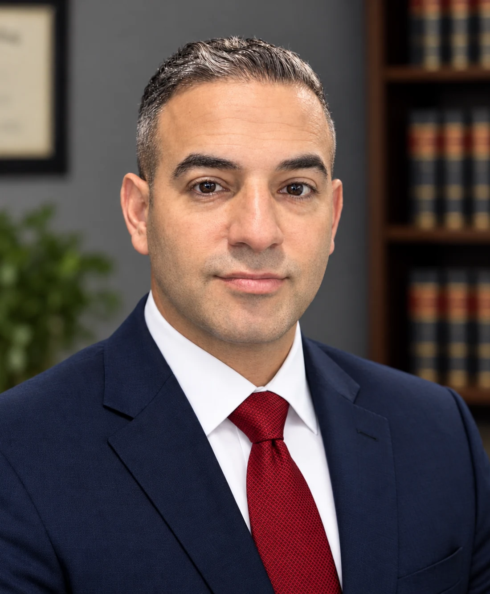

Jack Glanzberg, Esq.

Mr. Glanzberg began his legal career at the age of 14 in the mail room of Leav & Steinberg LLP, a preeminent personal injury law firm in New York City. After passing the bar, he spent nearly 12 years at the Aboulafia Law Firm, LLC, rising from associate to partner and primarily representing commercial and residential property owners in property damage and insurance coverage disputes. He later joined Molod, Spitz & DeSantis, P.C., where he focused on personal injury defense before founding the Glanzberg Law Firm, PLLC, in 2025.
As the founder and managing member of Glanzberg Law Firm, PLLC, Mr. Glanzberg is committed to providing zealous advocacy and ensuring that every client receives his personal attention. Having represented both insureds and insurance carriers, as well as plaintiffs and defendants, he brings a uniquely balanced perspective to each matter.
Mr. Glanzberg is well versed in insurance coverage and property damage issues, including but not limited to 1st Party Property Damage Claims, Liability Coverage — Defense & Indemnification Claims, Insurance Broker Negligence, Contractor Negligence, Adjacent Property Construction, and General & Commercial Litigation – Plaintiff and Defense. He also mediates cases for the above subject matters, as well as Labor Law, Fair Labor Standards Act, and Wrongful Termination disputes.
Education and professional experience.
Binghamton University (SUNY)
B.A. in Philosophy, Politics and Law, 2003–2007.
Elisabeth Haub School of Law at Pace University
J.D., 2007–2010.
Certified Mediator
Certified since 2022. Completed 40-hour mediation training and received a training certificate from Phoenix Dispute Solutions in October 2022. Joined the U.S. District Court for the Eastern District of New York Mediation Panel in June 2026.
Bar Admissions
- State of New York — Since 2011
- State of New Jersey — Since 2023
- U.S. District Court, Eastern District of New York — Since 2012
- U.S. District Court, Southern District of New York — Since 2012
- U.S. District Court, District of New Jersey — Since 2023
- U.S. Court of Appeals for the Second Circuit — Since 2020